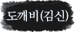
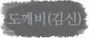
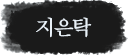
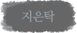
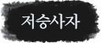
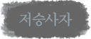
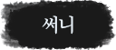







▶ 캐나다에서 다시 만난 신(공유)과 은탁(김고은). 자꾸만 맞닥뜨리는 이상한 장면들. 캐나다 곳곳의 추억은 은탁의 잊혀진 기억의 문을 두드린다! ▶ 저승사자(이동욱)와 써니(유인나)는 9년만에 처음으로 대면하는데... ▶ <도깨비> 1/21 (토) 저녁 8시 최종화 방송 15-16화 연속 방송
▶ 검을 뽑고 스스로 소멸을 선택한 도깨비의 흔적은 모두의 기억에서 사라진다. 그 후로 9년이 흐르는데... ▶ 도깨비와 신부(김고은), 그들의 비극적인 운명은 과연 이대로 끝난 것일까?
▶ 드디어 만난 김신(공유)과 왕여(이동욱)! 저승사자는 기억나지 않는 자신의 과거와 마주치고 괴로워하는데... ▶ 중헌(김병철)은 써니(유인나)와 은탁(김고은)에게 검은 손을 뻗기 시작한다! ▶ 이 모든 일의 종지부를 찍기 위한 준비를 시작하는 도깨비! 지독한 운명 속에 위태롭게 내몰린 이들의 운명은?
▶ 드디어 모습을 드러낸 간신 박중헌(김병철)! 중헌은 은탁(김고은)과 써니(유인나)의 주위를 위험하게 맴도는데...! ▶ 중헌은 도깨비(공유)와 저승사자(이동욱)를 파국으로 몰기 위해 계획을 실행해나간다. ▶ 드디어 덕화(육성재)의 존재에 대해 의문을 느끼기 시작한 도깨비와 저승사자. 과연 덕화의 정체는?
▶ 드디어 써니(유인나)가 전생에 자신의 여동생임을 알게 된 도깨비(공유)는 다짜고짜 써니를 찾아가고, 써니는 그런 도깨비가 이상하기만 하다. ▶ 또 다시 날아온 은탁(김고은)의 명부에 도깨비는 은탁에게 검을 뽑지 않으면 죽게되는 신부의 운명에 대해 털어놓기로 결심 하는데...!
▶ 써니(유인나)의 전생을 알게 된 저승사자(이동욱). 도깨비(공유)도 처음 듣는 써니의 '김선'이라는 본명 때문에 괜히 마음이 소란한데... ▶ 저승사자는 도깨비의 과거사를 묻고... 은탁(김고은)도 도깨비의 슬픈 과거를 다 듣고 말아버린다. ▶ 저승사자는 다시 한 번 써니의 손을 더 잡아보기로 결심하는데... 2016년 마지막을 장식할 tvN 10주년 특별기획 <도깨비>매주 금.토 저녁 8시 tvN 방송
▶ 드디어 도깨비 검의 비밀과 자신의 효용가치의 의미를 알게 된 은탁(김고은). ▶ 그리고 자신이 죽지 않으면 은탁이 죽게 되는 충격적 진실을 알게 된 도깨비(공유). ▶ 비극적 운명 앞에서 은탁은 도깨비를 밀어내기로 결심하는데.... 2016년 마지막을 장식할 tvN 10주년 특별기획 <도깨비>매주 금.토 저녁 8시 tvN 방송
▶ 무사히 은탁(김고은)을 받아낸 신(공유). 안도의 눈물을 흘리는 은탁의 모습에 검의 통증과는 비교할 수도 없이 더 아프고... ▶ 족자 속 여인에게 사무치는 그리움을 느끼는 저승사자(이동욱), 그런 저승사자를 기함하게 한 덕화(육성재)의 충격적인 발언 ▶ 은탁에게 닥친 죽음의 위기! 과연 무사할 수 있을까? 2016년 마지막을 장식할 tvN 10주년 특별기획 <도깨비>매주 금.토 저녁 8시 tvN 방송
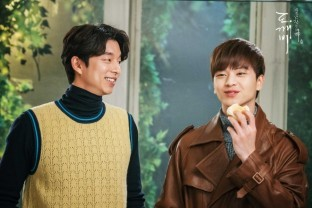
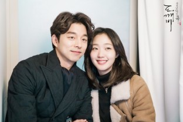
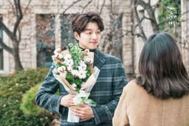
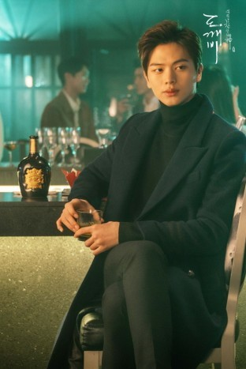
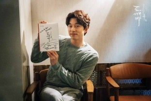
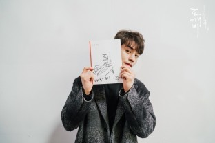
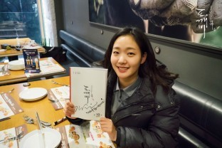